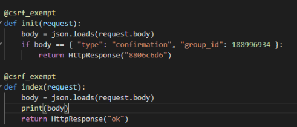
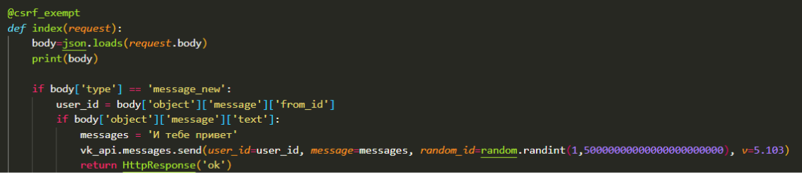

3. Как передаются параметры в GET запросе? (Можно написать пример)
4. Какой из запросов ограничен по объему передаваемых данных?
5. Какой метод более безопасен для передачи данных?
Создать новый туннель и проверить работу бота
1. Запустить ngrok
2. Выполнить ngrok http 8000
3. Скопировать новый адрес, с которого происходит переадресация на наш компьютер
4. Поменять адрес в переменной ALLOWED_HOSTS в файле settings.py
5. Запустить сервер Django
6. Поменять ссылку в вк и проверить, что результат OK
Бот, обрабатывающий события о новых сообщениях
1. В вк открывем Callback API => типы событий => ставим галочку на Входящие сообщения
2. Снова отправим запрос на подтверждение сервера
3. Создание функции, которая реагирует на запросы вк
3.1. Переименовываем текущую фунцию из index в init,
теперь мы будем вызывать ее только в случаях смены адреса сервера
3.2. Создаем новую функцию index, которая будет принимать запросы вк (код на рисунке ниже)

Функция index: в первой строке получаем тело запроса, то что отправляет нам на сервер вк, во второй строке используем функцию print, чтобы вывести
на его экран, в последней строке отправляем вк результат - то, что пакет был успешно получен и обработан, если его не отправить, вк попытается
отправить нам его снова и снова, что нагружает и вк, и наш сервер
4. Сохраняем изменения и запускаем сервер (если не запущен)
5. Заходи в сообщения сообщества и пишем что-нибудь)
6. Провем в VS Code, что вывелось в консоль (зарпос вк на наш сервер), смотрим из чего он состоит, копируем его и вставляем в поле ниже:
7. Обратим внимание на самые важные элемента этого ответа, напишите в поле ниже, какие значения соответствуют ключам type, group_id, object, id, from_id, text
type - message_new – говорит нам о том, что событие произошедшее в
сообществе это новое входящее сообщение
group_id - номер сообщества в котором произошло событие
object - объект содержащий в себе информацию о событии:
id – номер сообщения в нашем сообществе,
from_id – идентификатор пользователя, который написал нам это
сообщение
text - текст сообщения
Бот, отвечающий на сообщения
1. Теперь для того, чтобы мы смогли отправлять сообщения в ответ, нам понадобиться добавить библиотеку vk api в наш проект,
выполняем poetry add vk в командной строке
2. Импортируем библиотеку в файле views.py с помощью import vk
3. Для отправки сообщений нам понадобится ключ доступа, закодим
в нашего бота, вкладка Callback API => Ключи доступа => нажимаем создать ключ,
ставим все галочки и создаем ключ
4. В файле views.py добавляем следующий код после импорта библиотек
vk_api = vk.API(access_token='')
Где в переменную access_token мы передаем значение нашего ключа
доступа строкой.
Важно! Никому не сообщайте данный ключ и не публикуйте его в открытом доступе, поскольку тот кто получит этот ключ сможет управлять вашим сообществом.
5. Изменяем функцию для отправки сообщений

Обращаем внимание на строку vk_api.messages...,
именно в этой строке мы отправляем сообщение пользователю, что этот метод принимает:
user_id - пользователь, которому нужно отправить сообщение, message - текст нашего сообщения, random_id - нужен чтобы сделать сообщение уникальным, чтобы оно не повторялось и v - определяющая версию.
6. В начале кода импортируем библиотеку random: import random
7. Обратите внимание в строке где присутствует второй if, пропушено сравнение, нужно дописать == "Привет"
8. Проверяем работу бота :) (Пишем ему "Привет")
9. Дописать функцию так, чтобы на сообщение "Как дела?" бот отвечал
"Хорошо"
10. Дописать функцию так, чтобы на сообщение "Как дела?" бот отвечал
двумя сообщениями "Хорошо" и "Как твои?"